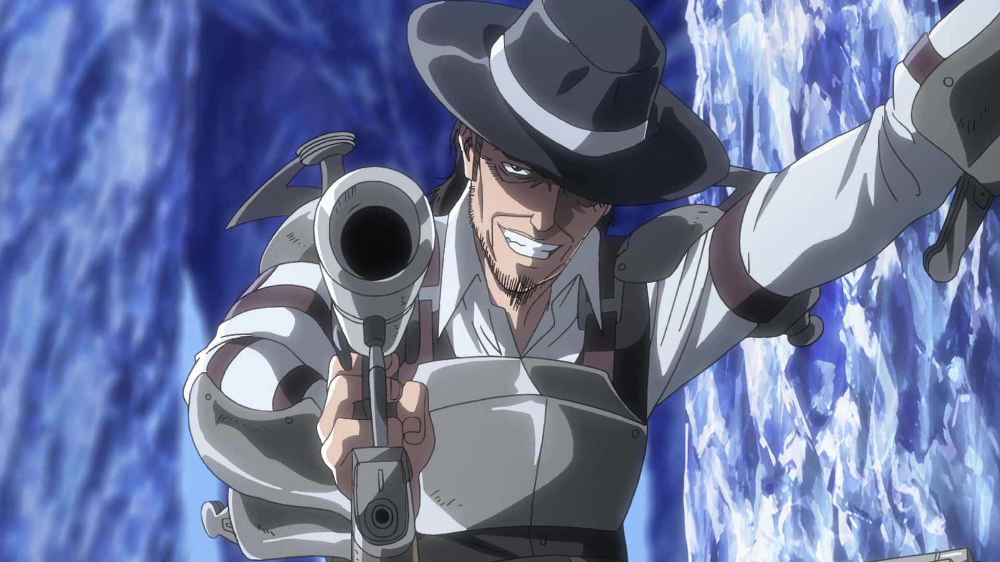

The Bloodline of Warriors
In the brutal world of Attack on Titan, survival depends on strength, courage, and the will to fight against impossible odds. Yet among all the warriors who have battled Titans and enemies alike, one bloodline stands apart — the legendary Ackerman clan.
Feared, admired, and often misunderstood, the Ackermans possess abilities that make them far stronger than ordinary humans. Their instinctive combat skills and unmatched determination have produced some of the most formidable fighters in history.
Three names in particular define the legacy of this mysterious family: Levi Ackerman, Mikasa Ackerman, and Kenny Ackerman. Though their lives followed very different paths, their shared bloodline shaped the fate of the world in ways few others could.
The Mystery of the Ackerman Clan
The Ackerman clan is one of the most mysterious families in the history of the Walls. Long before the main events of the story, they served as loyal protectors of the Eldian royal family. Unlike ordinary humans, the Ackermans were the result of ancient experiments that attempted to create warriors with the strength of Titans while remaining human.
Because of these experiments, members of the Ackerman clan possess extraordinary physical abilities and heightened combat instincts. They are essentially humans who can momentarily access power comparable to Titans.
However, this unique trait also made them a threat to the ruling powers. When the royal government used the Founding Titan’s power to erase the memories of the people within the Walls, the Ackermans were immune. They could not be controlled like the rest of humanity.
As a result, the Ackerman clan was persecuted and hunted, forcing many of its members to hide or live in isolation. Over time, the once-powerful family nearly vanished, leaving only a few surviving descendants.
The Ackerman Power
What makes the Ackermans truly special is a phenomenon often referred to as their "awakening". When an Ackerman experiences a moment of extreme emotional intensity—usually involving the desire to protect someone—their hidden power is unleashed. At that moment, they gain access to extraordinary strength, speed, and reflexes. Their abilities include:
- Superhuman physical strength
- Lightning-fast reaction speed
- Incredible battle awareness
- Instinctive mastery of combat techniques
It is often described as the ability to draw on the combat experience of past Ackermans, giving them almost supernatural fighting instincts. This is why even highly trained soldiers struggle to match them. Once awakened, an Ackerman becomes one of the most dangerous fighters on the battlefield.
Levi Ackerman – Humanity’s Strongest Soldier

|
|
|---|---|
| Name | Levi Ackerman |
| Alias | Humanity’s Strongest Soldier |
| Affiliation | Survey Corps |
| Role | Captain |
| Notable Trait | Unmatched Titan-slaying ability |
Born in the harsh Underground City, Levi grew up surrounded by crime, poverty, and violence. His life changed when he was taken in and trained by his uncle, Kenny Ackerman, a notorious killer who taught him how to survive in a brutal world.
Despite his cold demeanor, Levi eventually joined the Survey Corps, where his unmatched skills made him a legendary soldier. His precise movements, lightning-fast attacks, and ruthless efficiency allowed him to defeat enemies that even Titans feared.
Levi’s leadership, discipline, and unwavering dedication to humanity make him one of the most respected characters in the series. Beneath his stoic personality lies a deep sense of responsibility toward his comrades, especially those who sacrificed their lives under his command.
Mikasa Ackerman – Strength Forged by Love

|

|
|---|---|
| Name | Mikasa Ackerman |
| Affiliation | Survey Corps |
| Role | Elite Soldier |
| Notable Trait | Extraordinary combat instinct |
Mikasa’s childhood was filled with tragedy. After her parents were murdered by human traffickers, she was rescued by Eren Yeager. In that moment of terror and desperation, her Ackerman power awakened, allowing her to fight back with incredible strength.
From that day forward, Mikasa devoted herself to protecting Eren at all costs. Her fierce loyalty became both her greatest strength and her greatest internal struggle.
On the battlefield, Mikasa is one of the most skilled soldiers in the entire military. Her speed, agility, and precision with the Omni-Directional Mobility Gear make her a terrifying opponent for Titans and enemies alike.
Yet beyond her combat ability, Mikasa’s emotional journey—balancing love, duty, and personal freedom—makes her one of the most fan-favorite characters in the story.
Kenny Ackerman – The Ambitious Killer
 |
|
|---|---|
| Name | Kenny Ackerman |
| Alias | Kenny the Ripper |
| Affiliation | Anti-Personnel Control Squad |
| Role | Squad Leader |
| Notable Trait | Legendary killer |
Kenny Ackerman, known as Kenny the Ripper, was a ruthless assassin who made a name for himself by killing countless Military Police officers. His reputation as a deadly and unpredictable killer eventually brought him into contact with the royal government.
Despite his violent life, Kenny possessed a surprisingly philosophical outlook. He believed that everyone in the world was driven by something—power, dreams, love, or survival.
Kenny also played a crucial role in shaping Levi’s life. After finding Levi as a child, he raised and trained him before eventually disappearing. Though he never openly admitted it, Kenny clearly cared about Levi in his own rough and distant way.
Kenny’s story reveals the darker side of the Ackerman legacy: immense power combined with the constant struggle to find meaning in life.
How the Trio Shaped the Story
Although they rarely fought side by side, the actions of Levi, Mikasa, and Kenny had a profound impact on the course of the story. Kenny’s influence shaped Levi into the warrior he would become. Levi’s leadership in the Survey Corps helped humanity survive its darkest battles. Meanwhile, Mikasa’s dedication to protecting Eren played a crucial role in the unfolding conflict that determined the fate of the world.
Each of them represents a different path taken by the same powerful bloodline. Together, their choices shaped the destiny of countless lives.
- Levi chose duty and responsibility.
- Mikasa followed loyalty and emotional bonds.
- Kenny followed the path of ambition and personal freedom.
Why Fans Love the Ackermans
- Their extraordinary combat abilities make them some of the most thrilling characters to watch. Fighters like Levi Ackerman and Mikasa Ackerman deliver some of the most iconic action scenes in the series.
- Each Ackerman has a distinct personality and life path. Levi represents discipline and leadership, Mikasa embodies loyalty and emotional strength, while Kenny Ackerman reflects ambition and a darker philosophy about power.
- The mystery surrounding the Ackerman bloodline adds depth to their characters, making their legacy one of the most fascinating aspects of the story.
Conclusion
The story of the Ackermans is ultimately about power, survival, and choice. Though they share the same bloodline, Levi, Mikasa, and Kenny each walked a different path shaped by their beliefs and experiences.
Together, they represent three sides of the same legendary clan—warriors whose strength and influence helped shape the fate of the world in Attack on Titan. Their legacy ensures that the name Ackerman will always stand as a symbol of strength, resilience, and unforgettable heroism.